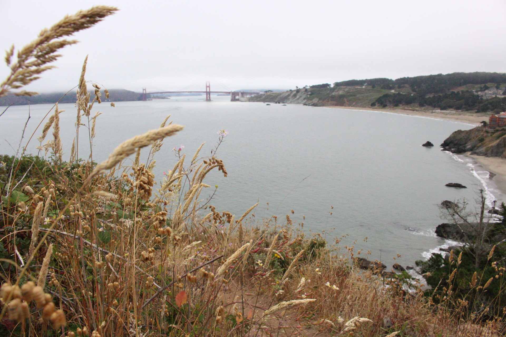

IGN Entertainment

My time at DXC was rewarding but also very relaxed. I found myself becoming too comfortable with the technologies I was using and not challenging myself enough. It wasn’t long before I came across an article from my favorite media outlet, IGN.com, talking about the summer internship Code Foo program! Yet again, self doubt engulfed me. Out of all the applicants across America, do you really think I have a shot at this? Do I even stand a chance? I just remembered how I felt the first day at DXC and for every application I done up to that point. I quickly reminded myself what my mother taught me; “You’ll never know unless you try”. I had about 1 month to deliver on the application and demonstrate my skills to the IGN engineering team. The major challenge of the application was to recreate a widget sized web page which would communicate with the IGN API, and list articles in videos. The CSS style and animations should also perfectly match the sample given. I had never worked in web development outside of Myspace and Tumblr in my younger years, so I knew I would have to teach myself an entirely new set of skills.
Yet here I was! I overcame all odds and was headed to sweet, beautiful California! The land where dreams come true(?)! Unable to contain my excitement, I booked a cheap flight on a rickety plane and spent a trip with my best friend, Dominic, exploring the Bay Area and locating exactly where I would soon be working in the heart of San Francisco. I don’t think I’ll ever be able to describe the rush of emotions that I felt when IGN Entertainment congratulated me on being accepted into the Code Foo program. For probably the first time ever, I cried tears of pure blissful joy. I never in my wildest imagination, saw myself at this point so soon in life. It truly felt like anything was possible if I focused and put the hard work and hours in. I realized very quickly that there is a much larger world waiting for me outside of El Paso.
I am very fortunate to have a loving and caring family. I’m even more fortunate to have my grandmother’s sister, Angie and her husband Frank who are San Jose locals and happily welcomed me to their home during my internship. I really couldn’t have done it without their hospitality, love and support. Being a 1-2 hour train ride away from work was completely foreign to me but soon become my daily commute. I couldn’t complain though, I brought a good book or took a nap and reminded myself that trains are much safer (and better for the environment!).
Every day at IGN was like walking into a dream for myself and the four other Code Foo interns. Getting off the elevator for the first time, I was greeted by a life-sized knight statue from the Dark Souls series. Venturing a little further, there was a life-sized Alien statue casually leaned against a wall. The cafeteria was stocked with a variety of cereal selection, warm bagels and even a keg! Bordering that was a common area lined with lego Star Wars displays, professional graffiti art, arcade machines and Playstation/Xbox stations specifically for gaming on breaks! Was this heaven?!
For so many years I saw the decorative office walls as the out of focus background of my favorite interviews, talk shows and video game reviews and now I was actually THERE! I felt like the ultimate fanboy. On just the initial tour, I quickly saw iconic members of the editorial team like Naomi Kyle, Max Scoville, Brian Altano, Daemon Hatfield and even Peer Schneider, one of the founders of IGN! I bid my time so as not to come off too strongly but eventually asked for pictures with them. I even shared a short lunch with Peer and Daemon where they shared with me what it would take to someday join the editorial team.
As if the opportunity wasn’t magical enough, we were quickly informed that this summer was a particularly special one because IGN would be filming their first ever show on the Disney Channel. I am incredibly proud to say that I was on Disney Channel, even if it was only the back of my head during a lunch break! The IGN team was beyond welcoming, taking us interns on a walk to the nearby Oracle Park for a backstage tour followed by a San Francisco Giants game. They also spoiled us with weekly lunches, after work happy hour at an arcade bar and bowling on our final day!
Although there were plenty of fun and games, technically speaking I gained experience developing in an Agile environment, participating in daily standup Scrum meetings and collaborating with highly knowledgeable senior engineers, designers and editors. The first half of our internship would consist of a group project while we spent the second half split up into different sub departments, each tailored towards our personal interests. Our team project involved completely revamping the “Personalities” pages which are dedicated to IGN Editors, including a short biography and complete history of media that they are featured in. It was during this period that I gained additional practice in interacting with APIs, coding for responsive webpages, source code management using GitHub and designing a solution that was stylishly consistent with the IGN brand.
I informed my supervisor, Adam, that I was interested in pursuing additional frontend development which then led me to working on the official IGN Playstation 4 and mobile applications. This was more of a developer’s sand box in which I was given a testing environment and let loose to play with the applications, taking them apart, adding features or doing whatever came to mind. Our final assignment was to take a week to create our own project or feature and present it to the department. The project could vary in scale and seriousness as much as we wanted. I chose to develop new tabs for the mobile application which would collect articles and videos related to podcasts, shows and shopping deals. The idea for this came from being an IGN media consumer myself. As one of the target audience members, I found that it wasn’t easy to quickly look up the latest deals and discounts or to filter out all media so as to only display shows and I believe my project fully corrected that.

My internship was over. I thanked Angie and Frank for making my dream possible and for their unwavering support and delicious dinners, always accompanied by the warmest of sunsets. My future was uncertain, but I now realized that I can achieve all my dreams and more. I spent my time wisely in San Francisco, however short it may have been. During those 6 weeks, I lost 44 pounds from the drastic change in lifestyle! From the 2 hour commute, waking as early as 4 am to get a workout in before catching a train into the city and then not getting home until as late as 9 pm just to start it all over again. I can’t say that I would’ve changed a single thing.
One of my most fond memories will always be a day where I told myself I would wake up early, get on an uber with no apparent destination in mind and get dropped off in the middle of the city. With my DSLR camera in hand, I explored the streets, piers, beaches, million-dollar neighborhoods before finally ending my adventure at the Golden Gate bridge. I feel as though days like this will always resonate with my spirit as a symbolic representation of my life and the challenges I am forced to overcome. I know that one day, when I am an old man and my memory tends to fail me, I will still not forget those miles walked barefoot along the beach beneath the Golden Gate bridge. I won’t forget the soft breeze, milkshakes with Angie and Frank or the taste of crab sandwich melts shared with my dad, cousin and Dominic when they came to visit me. I’ll always remember hiking Yosemite and Redwood National Parks, all while trying to capture as many pictures as possible out of fear of losing the moment. In this moment, I knew that all the success and happiness in the world is out there just waiting for me.